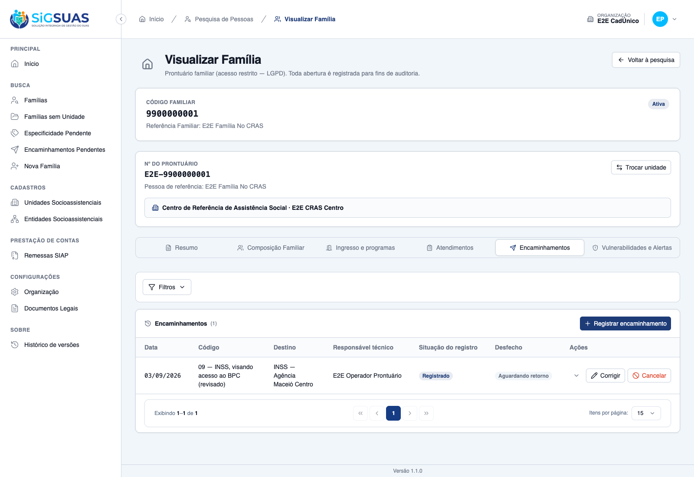
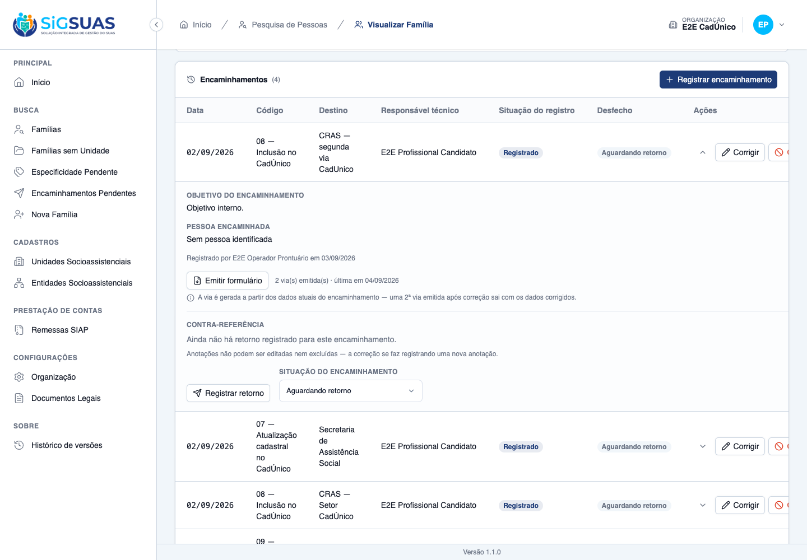

Os 14 critérios de aceite do chamado, mais 7 derivados na spec. A evidência central da HU foi produzida no navegador com dados reais: o formulário do cidadão foi efetivamente emitido, baixado e inspecionado — e o objetivo sensível NÃO aparece nele, nem no texto extraído nem no binário. A reemissão também foi exercida na tela, com o contador de vias e as linhas gravadas. Os demais critérios são cobertos pela suíte automatizada, que fecha em 152 testes e 880 asserções, todos verdes, com a saída completa no apêndice.
| CA | Critério | Status |
|---|---|---|
| CA01 | Registrar encaminhamento no prontuário | ATENDIDO · navegador |
| CA01b | O autor do registro é imutável (compõe o CA01 do ticket) | ATENDIDO · automatizado |
| CA02 | Código que conta indivíduos exige pessoa identificada | ATENDIDO · navegador |
| CA03 | Código de CadÚnico não exige pessoa (conta famílias) | ATENDIDO · automatizado |
| CA04 | Cadastramento feito na própria unidade também é encaminhamento | ATENDIDO · automatizado |
| CA05 | Os códigos oferecidos dependem do tipo da unidade de origem | ATENDIDO · navegador |
| CA06 | Destino e objetivo são obrigatórios | ATENDIDO · automatizado |
| CA07 | Emitir o formulário do encaminhamento | ATENDIDO · navegador |
| CA07b | O objetivo NÃO sai no formulário do cidadão (compõe o CA07 do ticket) | ATENDIDO · navegador |
| CA08 | Reemissão do formulário fica registrada | ATENDIDO · navegador + automatizado |
| CA09 | Data futura é recusada | ATENDIDO · automatizado |
| CA10 | Aviso quando a remessa do mês já foi gerada | ATENDIDO · automatizado |
| CA11 | Correção do encaminhamento fica registrada | ATENDIDO · automatizado |
| CA11b | O objetivo fica fora da trilha de auditoria (compõe o CA11 do ticket) | ATENDIDO · automatizado |
| CA12 | Cancelar com motivo, sem excluir | ATENDIDO · automatizado |
| CA12b | O cancelamento também avisa sobre a remessa | ATENDIDO · automatizado |
| CA13 | Profissional não registra em família de outra unidade | ATENDIDO · automatizado |
| CA14 | Isolamento entre municípios | ATENDIDO · automatizado |
| CA15 | Cancelado continua no histórico | ATENDIDO · navegador |
| CA16 | Correção que remove a pessoa de código que a exige é recusada | ATENDIDO · automatizado |
| CA17 | Família sem unidade de referência não registra | ATENDIDO · automatizado |
Critério (Gherkin): Dado que sou profissional lotado na unidade de referência da família Quando eu registrar um encaminhamento Então ele passa a constar do prontuário, com autor e data
Como foi testado: Login como Operacional com add-on LGPD → prontuário da família → aba Encaminhamentos → 'Registrar o primeiro encaminhamento' → preenchimento → Registrar.

Critério (Gherkin): Dado um encaminhamento registrado Quando outro profissional o corrigir Então o autor original é preservado
Como foi testado: created_by fora do fillable de atualização.
Evidência por cobertura automatizada — ver Anexo.
Critério (Gherkin): Dado que escolhi um código que conta indivíduos Quando eu tentar salvar sem identificar a pessoa Então o registro é recusado
Como foi testado: No formulário, selecionar o código 09 — INSS, visando acesso ao BPC.
Critério (Gherkin): Dado um código que conta famílias Quando eu registrar sem identificar pessoa Então o registro é aceito
Como foi testado: Coberto pela suíte: o catálogo marca requires_person em exatamente um item (o BPC).
Evidência por cobertura automatizada — ver Anexo.
Critério (Gherkin): Dado que a própria unidade realizou a atualização cadastral da família no CadÚnico Quando eu registrar o encaminhamento de atualização cadastral Então o registro é aceito normalmente E conta no período, ainda que a família não tenha sido enviada a outro órgão.
Como foi testado: Coberto pela suíte automatizada. O instrumento é explícito em que o encaminhamento ao CadÚnico vale “inclusive quando realizada nesta própria Unidade” (RN07), então o sistema não pode impor uma regra de origem diferente de destino.
Evidência por cobertura automatizada — ver Anexo.
Critério (Gherkin): Dado que a unidade de origem é um CRAS Quando eu abrir a lista de códigos Então o código restrito ao CREAS não é oferecido
Como foi testado: Selecionar a unidade E2E CRAS Centro e abrir a lista de códigos.
Critério (Gherkin): Dado que estou registrando Quando eu salvar sem órgão de destino ou sem objetivo Então o registro é recusado com erro no campo
Como foi testado: Coberto pelos Form Requests e pelos testes de validação; no front, os 422 vão para o campo com fallback para erro geral em chave não mapeada.
Evidência por cobertura automatizada — ver Anexo.
Critério (Gherkin): Dado um encaminhamento registrado Quando eu emitir o formulário Então recebo o documento para entregar ao cidadão E a emissão fica registrada
Como foi testado: Expandir a linha → Emitir formulário.
Critério (Gherkin): Dado que o encaminhamento tem objetivo registrado Quando eu emitir o formulário Então o objetivo não aparece no documento
Como foi testado: O objetivo foi propositalmente cadastrado como SEGREDO-DO-PRONTUARIO: relato sensível do trabalho social com a família. e o PDF emitido foi inspecionado com pdftotext e strings.
Critério (Gherkin): Dado que o cidadão perdeu o formulário Quando eu emitir novamente Então uma nova via é gerada E a reemissão fica registrada, com autor e data.
Como foi testado: Complemento de 04/09/2026, dirigido no Painel do Tenant: no detalhe de um encaminhamento sem nenhuma via emitida, acionar Emitir formulário duas vezes e observar o contador de vias e as linhas gravadas. Complementado pela suíte.

Critério (Gherkin): Dado que informo data posterior a hoje Quando eu salvar Então o registro é recusado
Como foi testado: Validação de data no Form Request + atributo max no input.
Evidência por cobertura automatizada — ver Anexo.
Critério (Gherkin): Dado que a remessa do mês do encaminhamento já foi gerada Quando eu registrar um encaminhamento retroativo Então sou avisado de que os números declarados mudam
Como foi testado: O aviso é computado, nunca persistido, e volta num bloco warnings[] irmão de data.
Evidência por cobertura automatizada — ver Anexo.
Critério (Gherkin): Dado que corrijo um encaminhamento Quando eu consultar a trilha Então a correção consta, com autor e data
Como foi testado: Campos estruturados entram na trilha; os sensíveis, não.
Evidência por cobertura automatizada — ver Anexo.
Critério (Gherkin): Dado que registrei ou alterei o objetivo Quando eu consultar a trilha Então o conteúdo do objetivo não aparece
Como foi testado: Molde do projeto: omissão no logOnly() (não existe `tapActivity` neste projeto), com escrita sempre por $model->save().
Evidência por cobertura automatizada — ver Anexo.
Critério (Gherkin): Dado um encaminhamento registrado Quando eu cancelá-lo com motivo Então ele permanece no prontuário, marcado como cancelado
Como foi testado: Cancelamento por status, nunca soft delete. A rota DELETE mapeia para cancelar.
Evidência por cobertura automatizada — ver Anexo.
Critério (Gherkin): Dado que cancelo encaminhamento de mês já remetido Quando o cancelamento é concluído Então recebo o mesmo aviso do registro
Como foi testado: Se apenas o registro avisasse, cancelar em mês já remetido seria silencioso — que é o caso mais grave, porque altera número já declarado ao Tribunal.
Evidência por cobertura automatizada — ver Anexo.
Critério (Gherkin): Dado que a família não é da minha unidade de lotação Quando eu tentar registrar Então a ação é recusada
Como foi testado: Reusa a infraestrutura de elegibilidade da fase F1 (lotação vigente na data).
Evidência por cobertura automatizada — ver Anexo.
Critério (Gherkin): Dado que sou usuário do município A Quando eu registrar ou consultar encaminhamentos Então alcanço somente famílias e unidades do município A.
Como foi testado: Coberto por duas classes de teste dedicadas ao isolamento, presentes no apêndice: ReferralIsolationTest e ReferralCounterReferenceIsolationTest.
Evidência por cobertura automatizada — ver Anexo.
Critério (Gherkin): Dado um encaminhamento cancelado Quando eu consultar o histórico Então ele continua listado, marcado como cancelado
Como foi testado: Consequência do cancelamento por status em vez de soft delete.
Critério (Gherkin): Dado que corrijo o código para um que exige pessoa Quando não houver pessoa identificada Então a correção é recusada
Como foi testado: A RN05 é avaliada no withValidator, com fallback para o código persistido.
Evidência por cobertura automatizada — ver Anexo.
Critério (Gherkin): Dado que a família não tem unidade de referência Quando eu abrir a aba Então a ação não é oferecida, com orientação
Como foi testado: Regra herdada da fase F1 (D05).
Evidência por cobertura automatizada — ver Anexo.
PASS Tests\Unit\Models\ReferralCodeTest ✓ it has correct fillable, casts and defaults 0.73s ✓ it uses soft deletes, HasUuid, LogsActivity and resolves by uuid 0.08s ✓ it is a GLOBAL lookup — never tenant-scoped (RN08) 0.03s ✓ it has no global scope of is_active — history and remittance never… 0.02s ✓ it keeps the four rules as data, cast to the enums (RN03–RN06) 0.03s ✓ it accepts NULL as a legitimate remittance counter value (CA02) 0.02s ✓ it enforces unique code — even against soft-deleted rows (RN09) 0.02s ✓ it configures the activity log with ALL the audited fields (RN10/§1… 0.03s PASS Tests\Unit\Models\ReferralCounterReferenceTest ✓ it is tenant-scoped and uuid-routed (§6.1/RN11) 0.04s ✓ it is APPEND-ONLY by design: no SoftDeletes and no LogsActivity — t… 0.02s ✓ it never exposes an activity log configuration — not even an empty… 0.02s PASS Tests\Unit\Models\ReferralFormEmissionTest ✓ it is tenant-scoped and uuid-routed, with emitted_at as datetime (§… 0.02s ✓ it is APPEND-ONLY by design: no SoftDeletes and no LogsActivity — t… 0.02s ✓ it has NO file_path column — the PDF never rests in storage (P1) 0.02s PASS Tests\Unit\Models\ReferralTest ✓ it has the expected casts and defaults — status registered, outcome… 0.02s ✓ it is tenant-scoped, soft-deletable, uuid-routed and audited (RN14/… 0.02s ✓ it NEVER logs objective nor cancel_reason — and DOES log the struct… 0.02s ✓ it marks cancellation by STATUS, keeping the row alive — never soft… 0.14s ✓ it resolves the referral code and the family member even when soft-… 0.05s PASS Tests\Feature\Api\Client\AttendanceReportReferralCrossTest ✓ it never feeds the CadUnico counters from attendance type 4 — 9 att… 0.21s PASS Tests\Feature\Api\Client\AttendanceReportTest ✓ it declares exactly the two remaining unavailable counters — the F2… 0.12s ✓ it lights the three referral counters with distinct families and pe… 0.12s ✓ it counts the same family ONCE with two inclusion referrals in the… 0.09s ✓ it drops a cancelled referral from the counters while it stays visi… 0.12s ✓ it keeps counting a referral whose outcome became not_attended — th… 0.08s ✓ it counts a retroactive referral in the month it was made, not the… 0.08s ✓ it keeps counting past referrals of a code inactivated in the Globa… 0.08s ✓ it keeps counting past referrals of a code SOFT-DELETED in the Glob… 0.07s ✓ it declares zero on the three referral counters for a unit without… 0.08s ✓ it never feeds the BPC counter from a referral row without a person… 0.07s PASS Tests\Feature\Api\Client\PendingReferralsTest ✓ it lists the 14 awaiting referrals of the unit with family, destina… 0.16s ✓ it scopes the list: Master sees every unit of the tenant; the opera… 0.09s ✓ it refuses the pending list to an operator WITHOUT the LGPD add-on… 0.08s ✓ it keeps the pending line renderable after the family record is sof… 0.08s ✓ it refuses a sort parameter — the oldest-first order is the rule (§… 0.07s PASS Tests\Feature\Api\Client\ReferralControllerTest ✓ it registers a referral signed and dated, born awaiting_return (CA0… 0.09s ✓ it refuses a BPC referral WITHOUT the person, naming family_member_… 0.07s ✓ it saves a BPC referral WITH the person, deriving person_id from th… 0.08s ✓ it saves a CadUnico referral WITHOUT person — it counts FAMILIES (C… 0.09s ✓ it refuses a person outside the CURRENT family composition (RN05) 0.09s ✓ it refuses the CREAS-only code from a CRAS unit — and offers the CR… 0.11s ✓ it refuses an INACTIVE code — only the select filters is_active (RN… 0.08s ✓ it accepts a referral whose destination is the OWN unit — no origin… 0.10s ✓ it refuses saving without destination or objective, naming the miss… 0.09s ✓ it refuses a future date (CA09/RN06) 0.08s ✓ it accepts TODAY at 23h in the app timezone — the boundary never re… 0.09s ✓ it saves a retroactive referral in a remitted month AND returns the… 0.08s ✓ it does NOT warn when the month remittance is pending or failed (CA… 0.09s ✓ it keeps social_unit_id as a SNAPSHOT after the family moves to ano… 0.08s ✓ it refuses a referral for a family WITHOUT a reference unit (CA17) 0.09s ✓ it demands the person when the update swaps the code to BPC (CA16) 0.09s ✓ it re-validates the responsible against the EFFECTIVE date — changi… 0.10s ✓ it re-validates code×unit compatibility on the EFFECTIVE pair — mov… 0.09s ✓ it clears the person when the update sends family_member_uuid null… 0.10s ✓ it warns for the OLD and the NEW month when an update moves the dat… 0.09s ✓ it cancels keeping the row, and refuses a second cancel with 409 (C… 0.11s ✓ it emits the SAME remittance warning when cancelling a referral of… 0.09s ✓ it refuses editing a CANCELLED referral with 409 — cancelled is ter… 0.10s ✓ it prohibits client-sent authorship, status, outcome and person_id… 0.08s ✓ it returns units, responsibles, compatible codes and the remittance… 0.08s ✓ it offers only UNRESTRICTED codes when no origin unit is given in o… 0.07s PASS Tests\Feature\Api\Client\ReferralCounterReferenceTest ✓ it registers the counter-reference and the outcome in the SAME requ… 0.09s ✓ it keeps the outcome untouched when the note comes alone — annotati… 0.07s ✓ it keeps both annotations in chronological ASC order, each with its… 0.10s ✓ it has NO route to edit or delete an annotation — 405 on the collec… 0.08s ✓ it lets the outcome be corrected from not_attended to attended (CA0… 0.08s ✓ it refuses an outcome outside the four states and an empty one (§10… 0.07s ✓ it requires the note and caps it at 5000 chars — without echoing th… 0.08s ✓ it refuses a counter-reference on a cancelled referral with 409 — a… 0.07s ✓ it refuses an outcome change on a cancelled referral with 409 — can… 0.07s ✓ it denies the counter-reference for a family of another unit, namin… 0.09s PASS Tests\Feature\Api\Client\ReferralIndexTest ✓ it lists referrals chronologically by referred_on, newest first, wi… 0.09s ✓ it breaks same-day ties by created_at DESC then id DESC — the order… 0.08s ✓ it paginates stably when five referrals share the same day — no rep… 0.09s ✓ it keeps the cancelled referral visible, marked, with reason — it l… 0.08s ✓ it filters by period on the referral date 0.08s ✓ it filters by referral code — and keeps filtering after the code is… 0.08s ✓ it filters by responsible professional, status and outcome 0.09s ✓ it refuses a sort parameter — the chronological order with tiebreak… 0.08s ✓ it writes ZERO activity_log rows for listing, filtering and paginat… 0.13s ✓ it runs a constant number of queries regardless of how many referra… 0.11s PASS Tests\Feature\Api\ReferralCodeControllerTest ✓ it lists referral codes exposing uuid and the four rules — never id 0.04s ✓ it shows the remittance counter and the person requirement of the B… 0.03s ✓ it shows NULL counter as an explicit "no specific counter" label (C… 0.03s ✓ it shows the unit-type restriction as an object with uuid, code and… 0.04s ✓ it creates a referral code with the code informed by the admin, map… 0.04s ✓ it rejects the uuid of a SOFT-DELETED unit type — the RN06 restrict… 0.05s ✓ it keeps showing the restriction when the unit type is soft-deleted… 0.04s ✓ it preserves the restriction when the PUT OMITS the key — absent ke… 0.04s ✓ it clears the restriction when the PUT sends the key explicitly nul… 0.04s ✓ it keeps a code restricted to a soft-deleted type EDITABLE via key… 0.03s ✓ it flags a live unit type with is_deleted false in the restriction… 0.03s ✓ it rejects a code outside the 2-digit zero-padded pattern of the in… 0.04s ✓ it rejects a duplicate code — the code is never generated (CA05) 0.03s ✓ it requires code, name and destination_area (CA05/RN03) 0.03s ✓ it rejects a destination area outside the enum, and accepts NULL re… 0.03s ✓ it rejects a remittance counter outside the enum — including the AT… 0.03s ✓ it audits the change of an apuration rule with old and new values i… 0.03s ✓ it exposes the audit trail with causer and pagination (CA11) 0.04s ✓ it soft deletes an unused referral code 0.03s ✓ it bulk deactivates and bulk activates referral codes, logging the… 0.03s ✓ it rejects soft-deleted uuids in every bulk action at validation ti… 0.04s ✓ it filters actives for the new-record select, and returns inactives… 0.03s ✓ it filters by destination area — the health area returns only its r… 0.03s ✓ it filters by remittance counter and by restricted unit type uuid (… 0.04s ✓ it rejects filter values outside the enums with 422 0.03s ✓ it blocks write without permission 0.03s ✓ it gives the admin_operador read-only access — every write is 403 (… 1.53s ✓ it lets the ADMIN role exercise all eight abilities end to end 1.43s ✓ it rejects client-guard tokens on every write route with 401, creat… 0.03s ✓ it keeps the shared read alive for the client guard — the tenant se… 0.03s PASS Tests\Feature\Api\ReferralCodeUsageTest ✓ it refuses to delete a code in use with 422, guiding deactivation (… 0.04s ✓ it still soft deletes a code NOT referenced by any consumer (CA08) 0.03s ✓ it still deletes a code NOT referenced by any referral under the pr… 0.03s ✓ it refuses to delete a code referenced by a REAL referral — CA08 da… 0.05s ✓ it ignores a registered consumer whose table does not exist yet (Sc… 0.02s ✓ it bulk destroy is ATOMIC: one item in use blocks all three and is… 0.03s ✓ it bulk destroys unused codes, logging the bulk event with author (… 0.03s PASS Tests\Feature\Console\SyncPermissionsTest ✓ it keeps referral-codes write abilities out of the client guard rol… 1.45s ✓ it grants the Operacional Global read-only access to referral codes… 1.58s PASS Tests\Feature\Family\ReferralAuditTest ✓ it NEVER leaks the objective nor the cancel reason into the activit… 0.18s ✓ it never echoes the objective in validation messages nor in denial… 0.11s PASS Tests\Feature\Family\ReferralCounterReferenceAuditTest ✓ it NEVER writes the annotation into activity_log — the table row it… 0.09s ✓ it audits the outcome change with author and de/para in attribute_c… 0.13s ✓ it never echoes the note in the cancelled 409 body (RN03) 0.08s PASS Tests\Feature\Referral\ReferralFormPdfTest ✓ it renders the RN08 items and NEVER the objective, the uuid nor the… 0.08s ✓ it prints the referred PERSON name when the referral identifies one… 0.08s ✓ it STILL prints unit, phone and professional after they are soft-de… 0.07s ✓ it returns a PDF stream and records WHO emitted and WHEN — re-emiss… 0.40s ✓ it never writes ANY file to storage — the PDF only exists in the re… 0.21s ✓ it refuses to emit the form for a CANCELLED referral with 409 — and… 0.08s PASS Tests\Feature\Seeders\IntakeLookupSeedersTest ✓ it marks exactly the nine referral forms as requiring the referring… 0.03s PASS Tests\Feature\Seeders\ReferralCodeSeederTest ✓ it seeds the seven ranges of the instrument, zero-padded, never fil… 0.05s ✓ it groups each range under its destination area (RN03/CA12) 0.05s ✓ it marks EXACTLY three items with a remittance counter — 07, 08 and… 0.05s ✓ it marks EXACTLY one item requiring an identified person — the BPC… 0.05s ✓ it marks EXACTLY two items restricted by unit type — 13 to CRAS, 14… 0.05s ✓ it marks the five free codes 85–89 with the free area and the descr… 0.05s ✓ it is idempotent — running the seeder twice does not duplicate nor… 0.05s ✓ it guarantees the social unit types when run standalone (RN06 depen… 0.05s ✓ it resolves CRAS/CREAS ids even when the unit types are soft-delete… 0.05s PASS Tests\Feature\TenantIsolation\AttendanceReportIsolationTest ✓ it never counts tenant B referrals in the tenant A referral counter… 0.08s PASS Tests\Feature\TenantIsolation\ReferralCounterReferenceIsolationTest ✓ it lists pending referrals of the OWN tenant only — the other munic… 0.10s ✓ it answers 404 for the whole new surface on a family of ANOTHER ten… 0.10s ✓ it answers 404 when the referral belongs to ANOTHER family of the s… 0.08s ✓ it scopes counter-references by tenant through the BelongsToTenant… 0.12s PASS Tests\Feature\TenantIsolation\ReferralIsolationTest ✓ it answers 404 for a family of ANOTHER tenant with the SAME body as… 0.09s ✓ it answers 404 when the referral belongs to ANOTHER family — scoped… 0.09s ✓ it answers 403 unit_not_assigned for a family of another unit — WIT… 0.09s ✓ it answers 403 no_active_assignment when the professional has no as… 0.08s ✓ it answers 403 for the operator WITHOUT the LGPD add-on — the class… 0.08s ✓ it scopes referrals by tenant through the BelongsToTenant global sc… 0.08s Tests: 152 passed (880 assertions) Duration: 18.25s